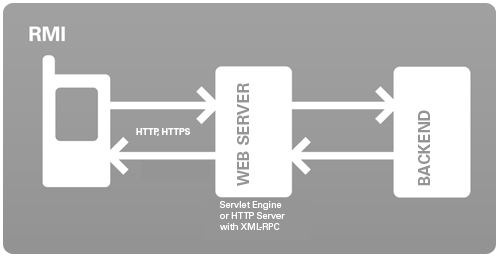

Remote Method Invocation (RMI) allows you to access server side functionality from within your mobile application. Learn in this section how easy and efficiently you can achieve this goal with J2ME Polish!
In this section you will learn how to access and implement server side functionality with J2ME Polish's Remote Method Invocation (RMI) framework.

The J2ME Polish RMI implementation either uses a slim binary protocol or the XML-RPC protocol for accessing server functionality from within your mobile application.
It's very easy to use the RMI framework - here are the required steps. You will learn about them in detail in the following sections.
You can also access a XML-RPC server using this technology and tweak the RMI framework to your needs. Now let's have a look at the details!
At first you have to agree on an interface between the server and your mobile application. You do this by extending the empty de.enough.polish.rmi.Remote interface. Every method that you define needs to throw at least the de.enough.polish.rmi.RemoteException. If it doesn't, J2ME Polish will abort the build and notify you. In the following example we are sending a name, a phone number and a password for registrating a user. When the registration succeeds, the server should return true:
package com.company.multiplayergame;
import de.enough.polish.rmi.Remote;
import de.enough.polish.rmi.RemoteException;
/** A simple example for registering a user. */
public interface GameServer extends Remote {
/**
* Registers a user on the server.
* @param name the desired login name of the user
* @param msisdn the phone number of the user
* @param password the password
* @return true when the registration succeeds
* @throws RemoteException when the server could not be contacted
* or an error occurred during registration
*/
public boolean registerUser( String name, String msisdn, String password )
throws RemoteException;
}
In the remote interface you can use any seriablizable parameters and return values.
This includes normal Java classes like Vector, Image or Date and any classes that either implement
de.enough.polish.io.Serializable
or de.enough.polish.io.Externalizable.
You can also throw your own custom exceptions when they implement Externalizable.
Please compare the serialization documentation for learning more details about serialization.
In the following example we add real objects and your own custom exception to the mix:
package com.company.multiplayergame;
import de.enough.polish.rmi.Remote;
import de.enough.polish.rmi.RemoteException;
/** A more complex example for registering and logging in a user. */
public interface GameServer extends Remote {
/**
* Registers a user on the server.
* @param name the desired login name of the user
* @param msisdn the phone number of the user
* @param password the password
* @return a user object when the registration succeeds
* @throws RemoteException when the server could not be contacted
* @throws RegistrationException when an error occurred during
* registration like a duplicate registration
*/
public GameUser registerUser( String name, String msisdn, String password )
throws RemoteException, RegistrationException;
/**
* Logs in a user on the server.
* @param user the user
* @param password the password
* @return the user with an updated account
* @throws RemoteException when the server could not be
* contacted or an error occurred during login
*/
public GameUser loginUser( GameUser user, String password )
throws RemoteException;
}
package com.company.multiplayergame;
import de.enough.polish.io.Serializable;
public class GameUser implements Serializable {
public String name;
public String msisdn;
public int account;
}
package com.company.multiplayergame;
import de.enough.polish.io.Externalizable;
public class RegistrationException implements Externalizable {
private String message;
public RegistrationException() {
// this constructor is required by the Externalizable conventions
}
public RegistrationException( String reason ) {
super( reason );
this.message = reason;
}
public void read(DataInputStream in) throws IOException {
this.message = in.readUTF();
}
public void write(DataOutputStream out) throws IOException {
out.writeUTF( this.message );
}
}
You can access the remote server in your mobile application by calling
de.enough.polish.rmi.RemoteClient.open(..), which takes
two parameters: the first parameter defines the full name of the interface and the second one defines the URL of the service. Please note
that the interface name needs to be defined directly within the open call, it is not allowed to give the interface name with a variable.
This restriction is necessary, because J2ME Polish is exchanging and modifying this call during the preprocessing phase.
For clarification, the following code works:
// this code works fine: this.server = (GameServer) RemoteClient.open( "com.company.multiplayergame.GameServer", "http://www.myserver.com/gameserver/myservice" );
The following code will not work:
// this code will not work!!! String myInterfaceName = "com.company.multiplayergame.GameServer"; this.server = (GameServer) RemoteClient.open( myInterfaceName, "http://www.myserver.com/gameserver/myservice" );
You can now access the server just by calling the methods of the interface. For avoiding deadlocks you should
call remote methods in a separate thread. You can use de.enough.polish.event.ThreadedCommandListener
for doing calls in the commandAction() method itself:
// an example for using the instantiated GameServer server within a MIDlet:
import de.enough.polish.event.ThreadedCommandListener;
import javax.microedition.lcdui.*;
public class MyEventHandler
implements CommandListener
{
public MyEventHandler( Screen screen ) {
screen.setCommandListener( new ThreadedCommandListener( this ) );
}
public void commandAction( Command cmd, Displayable disp ) {
if (cmd == this.cmdRegisterUser) {
try {
String name = getRegistrationName();
String msisdn = getRegistrationMsisdn();
String password = getRegistrationPassword();
GameUser user =
this.server.registerUser( name, msisdn, password );
storeUser( user );
showRegistrationSuccessScreen( user );
} catch (RegistrationException e) {
showRegistrationFailureScreen( e );
} catch (RemoteException e) {
showCommunicationFailureScreen( e );
}
}
}
}
Note: If you cannot use Java on your server, please have a look at the XML-RPC section.
Now we can realize the server side funtionalities by implementing the defined Remote interface. For simple cases, it is sufficient to extend Object, if you want to access HTTP sessions, you need to extend the de.enough.polish.rmi.RemoteHttpServlet. In the following example we access the HttpSession in the login() method - when a single client fails to login for more than 10 times in a row, we abort the login process and throw an exception. By the way, the RMI framework will automatically remember a cookie during the session and will use it for new connections. Cookies are held separately in memory for each server-URL.
package com.company.multiplayergame;
import de.enough.polish.rmi.RemoteException;
import de.enough.polish.rmi.RemoteHttpServlet;
/** The server side realization of the remote interface. */
public class GameServerImpl
extends RemoteHttpServlet
implements GameServer
{
/**
* Registers a user on the server.
* @param name the desired login name of the user
* @param msisdn the phone number of the user
* @param password the password
* @return a user object when the registration succeeds
* @throws RemoteException when the server could not be contacted
* @throws RegistrationException when an error occurred during
* registration like a duplicate registration
*/
public GameUser registerUser( String name, String msisdn, String password )
throws RemoteException, RegistrationException
{
if (userExists(name)) {
throw new RegistrationException("the desired user name is already in use: " + name );
}
if (msisdn == null || msidn.length() < 4) {
throw new RegistrationException("invalid phonenumner: " + msisdn );
}
GameUser user = new GameUser();
user.name = name;
user.msisdn = msisdn;
user.account = getDefaultAccount();
return user;
}
/**
* Logs in a user on the server.
* @param user the user
* @param password the password
* @return the user with an updated account
* @throws RemoteException when the server could not be
* contacted or an error occurred during login
*/
public GameUser loginUser( GameUser user, String password )
throws RemoteException
{
HttpSession session = getSession( false );
int numberOfLoginTrials = 0;
if (session != null) {
Integer numberOfLoginTrialsInt = session.getAttribute("login.number");
if (numberOfLoginTrialsInt != null) {
numberOfLoginTrials = numberOfLoginTrialsInt.intValue();
if (numberOfLoginTrials > 10) {
throw new RemoteException("too many wrong logins, please try again later.");
}
}
}
if (loginSucceeds( user, password ) {
user.account = getCurrentAccount( user );
if (session != null) {
session.removeAttribute("login.number");
}
return user;
} else {
if (session == null) {
// create a new session:
session = getSession( true );
}
session.setAttribute("login.number", new Integer( numberOfLoginTrials + 1 ) );
throw new RemoteException("wrong login data supplied.");
}
}
...
}
You can initialize your server application upon startup by overwriting the init(ServletConfig)
method. When you do not extend
de.enough.polish.rmi.RemoteHttpServlet,
you can implement the method init(java.util.Map) instead.
public void init(ServletConfig cfg) throws ServletException {
super.init(cfg);
String myInitValue = cfg.getInitParameter("cfg.gameserver.MyInitParam");
// ... process value etc
}
You need to add <init-param> values to
the web.xml file for configuring your service in this way.
<servlet>
<servlet-name>RemoteHttpServlet</servlet-name>
<servlet-class>de.enough.polish.sample.rmi.GameServerImpl</servlet-class>
<init-param>
<param-name>cfg.gameserver.MyInitParam</param-name>
<param-value>my init value</param-value>
</init-param>
</servlet>
We recommend using Ant for building a WAR archieve that contains your servlet, the configuration and all serializable classes.
WAR archieves are standardized ZIP files that are automatically recognized and deployed by servlet containers like Tomcat or JBoss. Using
WAR files allows you to hot swap implementations during runtime without restarting your server.
You need the following components for the WAR file:
To gather the necessary components, we suggest that you structure your project in the following way in your ${project.home}:
Since you are now using two source code folders, you have to tell J2ME Polish about it. You do this by adding a <sources> element to the <build> section of the J2ME Polish task within your build.xml script (which is situated in your project home folder):
<sources> <source dir="source/src" /> <source dir="source/common" /> </sources>
Further RMI specific configuration settings are not required.
You are now ready to build the application by starting J2ME Polish either from your IDE or from the command line. When the build has finished, you will find a file called "client-rmi-classes.jar" in your project"s "dist" folder. If not, please consult the Troubleshooting section.
You are now ready to compile your server code. Within your build.xml script create a new target called "build-server":
<target name="build-war" description="builds the server war file for Tomcat or other J2EE/Servlet Containers.">
<taskdef name="present"
classname="de.enough.polish.ant.PresentTask"
classpath="${polish.home}/lib/enough-j2mepolish-build.jar"/>
<present file="dist/client-rmi-classes.jar" failMessage="Please run either the j2mepolish or the build-all target first." />
<copy file="${polish.home}/lib/enough-j2mepolish-rmi.jar" todir="dist" />
<delete dir="bin/server" />
<mkdir dir="bin/server" />
<javac srcdir="source/server"
destdir="bin/server"
classpath="dist/client-rmi-classes.jar:dist/enough-j2mepolish-rmi.jar:${polish.home}/lib/javax.servlet.jar" />
<jar destfile="dist/gameserver.jar" basedir="bin/server" excludes="**/CVS" />
<war
destfile="dist/gameserver.war"
webxml="source/server/web.xml"
>
<lib dir="dist" includes="client-rmi-classes.jar,enough-j2mepolish-rmi.jar,gameserver.jar" />
</war>
</target>
In the above code we first ensure that the dist/client-rmi-classes.jar really exists. Then we copy the server side JAR ${polish.home}/lib/enough-j2mepolish-rmi.jar into our dist folder before we compile our server side code. Please note that we do not compile the source code in source/common. This is not necessary since J2ME Polish puts all serializable classes as well as Remote interfaces into dist/client-rmi-classes.jar. After the compilation we put the server side classes into the gameserver.jar file and create the dist/gameserver.war file.
You need to define your servlet and map it with the web.xml file. In the above compilation example we store this file in ${project.home}/source/server/web.xml:
<?xml version="1.0" encoding="ISO-8859-1"?>
<web-app xmlns="http://java.sun.com/xml/ns/j2ee"
xmlns:xsi="http://www.w3.org/2001/XMLSchema-instance"
xsi:schemaLocation="http://java.sun.com/xml/ns/j2ee http://java.sun.com/xml/ns/j2ee/web-app_2_4.xsd"
version="2.4">
<display-name>GameServer</display-name>
<description>
A simple game server application that can be accessed by mobile J2ME applications.
</description>
<servlet>
<servlet-name>RemoteHttpServlet</servlet-name>
<servlet-class>de.enough.polish.sample.rmi.GameServerImpl</servlet-class>
<!-- use init-params for configuring your service -->
<init-param>
<param-name>cfg.gameserver.MyInitParam</param-name>
<param-value>my game server init value</param-value>
</init-param>
</servlet>
<servlet-mapping>
<servlet-name>RemoteHttpServlet</servlet-name>
<url-pattern>/myservice</url-pattern>
</servlet-mapping>
</web-app>
To deploy your server, just copy the dist/gameserver.war file into the folder that contains your web applications. For Tomcat the default folder is ${tomcat.home}/webapps. When your servlet container is already running, you will see a note in the log that your application is now deployed, for example:
INFO: Deploying web application archive gameserver.war
Congratulations, you have now done all steps necessary for creating an application that interacts with your remote server!
XML-RPC (XML-Remote Procedure Calls) is a specification
that allows to make procedure calls using a simple XML notation over HTTP/HTTPS. You can activate XML-RPC usage
in J2ME Polish by specifying the polish.rmi.xmlrpc variable in your build.xml script:
<variable name="polish.rmi.xmlrpc" value="true" />
The rest of the usage is the same as for the default RMI usage - you define an interface and
connect it with the server using RemoteClient.open(String interfaceClassName, String url ) in your J2ME client application.
If the XML-RPC server uses dots in method names like shop.addToCart you can write 2 underline characters
instead of a dot in your interface definition, as Java does not allow dots in method names:
public interface MyShop {
public boolean shop__addToChart( String order, int number )
throws RemoteException;
}
In case you don't want to use 2 underline characters you can specify your own dot-replacement string using the
polish.rmi.xmlrpc.methodname.dot preprocessing variable.
XML-RPC is a lightweight protocol and is widely implemented in many programming languages. Here are a couple of libraries for some languages:
XML-RPC defines some basic data types that can be exchanged - the following table lists the XML-RPC and the corresponding Java data types:
| XML-RPC | Java | Notes |
|---|---|---|
| <i4> or <int> | int | - |
| <i8> | long | A non standard extension for accomodating longs, do not use when the server cannot handle this. |
| <double> | double | Only available on CLDC 1.1 or when you are using the J2ME Polish Floater tool. |
| <boolean> | boolean | - |
| <string> | String | - |
| <dateTime.iso8601> | java.util.Calendar | Makes no assumptions about the timezone, for input/method parameters you can also use java.util.Date. |
| <base64> | byte[] | - |
| <array> | Object[] | Primitive arrays are not supported, for input/method parameters you can also use java.util.Vector. |
| <struct> | java.util.Hashtable | The Hashtable uses Strings for the keys. |
Since XML-RPC only provides rudimentary exception handling, there is a specific XmlRpcRemoteException that allows you to get more information about server errors:
public interface TestServer extends Remote {
public Hashtable getValues( String userName, String password, int maxNumber )
throws RemoteException;
}
import de.enough.polish.rmi.xmlrpc.XmlRpcRemoteException;
...
public class TestClient {
private TestServer server;
...
public Hashtable callRemoteServer()
throws RemoteException
{
if (this.server == null) {
this.server = RemoteClient.open("TestServer", "http://myserver.com/test" );
}
try {
return this.server.getValues( "MyUserName", "secret", 100);
} catch (XmlRpcRemoteException e) {
int errorCode = e.getFaultCode();
String message = e.getMessage();
System.out.println("Server answered with error " + errorCode ": " + message );
throw e;
}
}
}
Instead of accessing servers from the internet, you can also choose to access a bluetooth service on a local computer. You can choose between accessing L2CAP and SPP/RFComm bluetooth services. L2CAP has less overhead than SPP, but L2CAP is not available in Microsoft Windows PCs that use the Microsoft Bluetooth stack. Creating the client is no different than with normal RMI, but the server implementation differs.
For accessing a bluetooth service over L2CAP you need to follow these steps:
<variable name="polish.rmi.l2cap" value="true" />de.enough.polish.rmi.bluetooth.L2CapRemoteService;
register your server implementation by calling init( Remote impl, String uuid ):
BluetoothRemoteService serv = new L2CapRemoteService(); serv.init( myImplementation, UUID );
RemoteClient.open() with the classname and the UUID of the service:
MoteServer server = (MoteServer) RemoteClient.open("de.enough.mote.MoteServer", MoteServer.UUID );
The client searches automatically for a PC based bluetooth server upon first usage. To search and connect before,
you can cast the Remote instance that
you receive by calling RemoteClient.open() to de.enough.polish.rmi.bluetooth.BluetoothRemoteClient
and call connect() on a separate thread:
MoteServer server = (MoteServer) RemoteClient.open("de.enough.mote.MoteServer", MoteServer.UUID );
((BluetoothRemoteClient)server).connect();
Using the serial port protocol (SPP) instead of L2CAP is easy and uses the very same steps as for L2CAP with following differences:
<variable name="polish.rmi.spp" value="true" />de.enough.polish.rmi.bluetooth.SppRemoteService instead of L2CapRemoteServer.The following code extracts give you some insights into the process of creating a bluetooth based sample application. This sample uses the Serial Port Protocol (SPP) support, the steps are the same for L2CAP, necessary changes are outlined in the code where applicable.
Create the interface like normally in RMI by extending de.enough.polish.rmi.Remote:
package de.enough.mote;
import de.enough.mote.model.ActionDescription;
import de.enough.mote.model.ActionSuiteDescription;
import de.enough.polish.rmi.Remote;
import de.enough.polish.rmi.RemoteException;
public interface MoteServer extends Remote
{
public static final int VERSION = 100;
public static final String UUID = "deb89bf0add611ddad8b0800200c9a66";
public static final String EVENT_CONNECTED = "mt.cnctd";
public static final String EVENT_CONNECTING = "mt.cnctng";
public ActionSuiteDescription[] getSuites( String locale, String device )
throws RemoteException;
public ActionDescription[] getActions( String locale, String suiteId )
throws RemoteException;
public void executeAction( String actionId )
throws RemoteException;
}
Implement the server and register it with either de.enough.polish.rmi.bluetooth.L2CapRemoteService
or de.enough.polish.rmi.bluetooth.SppRemoteService:
package de.enough.mote.desktop;
import javax.bluetooth.BluetoothStateException;
import de.enough.mote.MoteServer;
import de.enough.mote.desktop.actions.keynote.KeynoteShowNextAction;
import de.enough.mote.desktop.actions.keynote.KeynoteShowPreviousAction;
import de.enough.mote.desktop.actions.say.TalkHelloAction;
import de.enough.mote.desktop.actions.say.TalkOlgsAction;
import de.enough.mote.model.ActionDescription;
import de.enough.mote.model.ActionSuiteDescription;
import de.enough.polish.rmi.RemoteException;
import de.enough.polish.rmi.bluetooth.BluetoothRemoteService;
import de.enough.polish.rmi.bluetooth.L2CapRemoteService;
import de.enough.polish.rmi.bluetooth.SppRemoteService;
public class MoteDesktopServer implements MoteServer
{
private static final int MODE_L2CAP = 0;
private static final int MODE_SPP = 1;
private static final int MODE_OBEX = 2;
private static final int MODE = MODE_SPP;
private BluetoothRemoteService service;
private KeynoteShowNextAction keynoteForwardAction;
private KeynoteShowPreviousAction keynoteBackwardAction;
private TalkHelloAction talkHelloAction;
public MoteDesktopServer() {
BluetoothRemoteService serv = new SppRemoteService();
// use L2CapRemoteService when using L2CAP instead of SPP:
// BluetoothRemoteService serv = new L2CapRemoteService();
serv.init( this, UUID );
this.service = serv;
this.keynoteForwardAction = new KeynoteShowNextAction();
this.keynoteBackwardAction = new KeynoteShowPreviousAction();
this.talkHelloAction = new TalkHelloAction();
}
public ActionSuiteDescription[] getSuites(String locale, String device)
throws RemoteException
{
System.out.println("getSuites for language " + locale + ", device=" + device);
return new ActionSuiteDescription[] {
new ActionSuiteDescription("keynote", "Keynote", "Controls Apple Keynote.", null ),
new ActionSuiteDescription("say", "Talk", "Talk to me.", null )
};
}
public ActionDescription[] getActions(String locale, String suiteId)
throws RemoteException
{
System.out.println("getActions");
if (suiteId.equals("keynote")) {
return new ActionDescription[]{
new ActionDescription( "keynote.forward", "forward", -1, ActionDescription.GAME_ACTION_RIGHT, null ),
new ActionDescription( "keynote.backward", "backward", -1, ActionDescription.GAME_ACTION_LEFT, null )
};
} else {
return new ActionDescription[]{
new ActionDescription( "talk.hello", "hello world", -1, -1, null ),
};
}
}
public void executeAction(String actionId) throws RemoteException
{
System.out.println("executing action " + actionId);
if (actionId.equals("keynote.forward")) {
this.keynoteForwardAction.execute();
} else if (actionId.equals("keynote.backward")) {
this.keynoteBackwardAction.execute();
} else if (actionId.equals("talk.hello")) {
this.talkHelloAction.execute();
}
}
public void start() throws BluetoothStateException
{
this.service.start();
}
public void stop()
{
this.service.stop();
}
}
The client implementation is the same as with normal RMI - instead of a website URL you specify the UUID
of the service in RemoteClient.open():
package de.enough.mote;
import java.io.IOException;
import javax.microedition.midlet.MIDlet;
import javax.microedition.midlet.MIDletStateChangeException;
import de.enough.mote.ui.UiManager;
import de.enough.polish.rmi.RemoteClient;
import de.enough.polish.rmi.bluetooth.BluetoothRemoteClient;
public class MoteMidlet extends MIDlet
{
private UiManager uiManager;
private MoteServer server;
public MoteMidlet()
{
// startApp is used
}
protected void destroyApp(boolean force) throws MIDletStateChangeException
{
if (this.server instanceof BluetoothRemoteClient) {
try
{
((BluetoothRemoteClient)this.server).disconnect();
} catch (IOException e)
{
//#debug error
System.out.println("Unable to disconnect bluetooth client" + e);
}
}
}
protected void pauseApp()
{
// nothing to pause...
}
protected void startApp() throws MIDletStateChangeException
{
if (this.uiManager == null) {
this.server = loadMoteServer();
this.uiManager = UiManager.getInstance(this, this.server);
if (this.server instanceof BluetoothRemoteClient) {
ConnectionThread thread = new ConnectionThread((BluetoothRemoteClient)this.server);
thread.start();
}
}
this.uiManager.startApp();
}
private MoteServer loadMoteServer()
{
return (MoteServer) RemoteClient.open("de.enough.mote.MoteServer", MoteServer.UUID );
}
public void exitApp()
{
try
{
destroyApp(true);
} catch (MIDletStateChangeException e)
{
// ignore
}
notifyDestroyed();
}
}
package de.enough.mote;
import de.enough.polish.event.EventManager;
import de.enough.polish.rmi.bluetooth.BluetoothRemoteClient;
public class ConnectionThread extends Thread
{
private BluetoothRemoteClient client;
public ConnectionThread( BluetoothRemoteClient client ) {
this.client = client;
}
public void run() {
// wait so that UI is started and shown:
try
{
Thread.sleep(500);
} catch (InterruptedException e)
{
// ignore
}
EventManager.fireEvent(MoteServer.EVENT_CONNECTING, this.client, null);
while (true) {
try
{
this.client.connect();
EventManager.fireEvent(MoteServer.EVENT_CONNECTED, this.client, null);
return;
} catch (Exception e)
{
//#debug error
System.out.println("Unable to establish connection" + e);
try
{
Thread.sleep(10 * 1000);
} catch (InterruptedException e1)
{
// ignore
}
}
}
}
}
The necessary setup in your build.xml only requires setting either polish.rmi.spp
or polish.rmi.l2cap:
<variable name="polish.rmi.spp" value="true" />
You can easily test your mobile application without the server by using a mockup server implementation:
polish.rmi.mockup. and ends with the fully qualified name of your server interface. Set this
variable to a call that retrieves your mockup - this can be static call or a constructor like in this example:
<variable name="polish.rmi.mockup.de.enough.polish.sample.rmi.GameServer"
value="new de.enough.polish.sample.rmi.test.MockupGameServer()" />
That's all. Just deactivate the preprocessing variable when you want to access the server. You could change your build.xml so that you can create mockup versions of your application easily by adding conditions to your variable definition:
<target name="j2mepolish"
...
<variable
name="polish.rmi.mockup.de.enough.polish.sample.rmi.GameServer"
value="new de.enough.polish.sample.rmi.test.MockupGameServer()"
if="mockup"
/>
...
</target>
<target name="enableMockup" >
<property name="mockup" value="true" />
</target>
<target name="mockup" depends="enableMockup, j2mepolish" />
The RMI framework can be tweaked towards your needs by setting preprocessing variables in the <variables> section of your build.xml script.
polish.rmi.redirects to false:
<variable name="polish.rmi.redirects" value="false" />
polish.rmi.xmlrpc variable to true:
<variable name="polish.rmi.xmlrpc" value="true" />
polish.rmi.xmlrpc.methodname.dot preprocessing variable:
<variable name="polish.rmi.xmlrpc.methodname.dot" value="_dot_" />
polish.rmi.l2cap variable to true:
<variable name="polish.rmi.l2cap" value="true" />
polish.rmi.spp variable to true:
<variable name="polish.rmi.spp" value="true" />
polish.rmi.mockup.${fully qualified interface name}, for example like this:
<variable name="polish.rmi.mockup.de.enough.polish.sample.rmi.GameServer"
value="new de.enough.polish.sample.rmi.test.MockupGameServer()" />
There are some possible problems you might encounter during development. Please consider the following solutions for solving your problems.
The J2ME Polish RMI framework is enabled automatically, when J2ME Polish finds an interface that extends de.enough.polish.rmi.Remote.
When there is no dist/client-rmi-classes.jar file present, it means that J2ME Polish has not recognized that you have extended interface Remote.
Make sure that you have the line extends Remote in your code, so use an import statement for de.enough.polish.rmi.Remote
and leave a single space between extends and Remote. Do not fully qualify the interface, i.e. do not write extends de.enough.polish.rmi.Remote.
Note that this file is not generated when you are accessing an XML-RPC server, i.e. the variable "polish.rmi.xmlrpc" is set to true.
Your server might not understand obfuscated class names. You will see a message like "Class not found: a" when this happens. The most common causes for this problem are the following:
At the heart of obfuscation problems lies the necessary translation of classnames. When an object is serialized (written), the name of it's class needs to be stored first, so that the class can later be de-serialized (read) again. When you use obfuscation, the class names are changed and shortened, so two things are required:
Both goals are achieved with a obfuscation map, which is stored in ${project.home}/.polishSettings/obfuscation-map.txt on building the application. This obfuscation map translates any classname to its obfuscated counterpart, so that the server can understand the client by using the same method names.
The J2ME Polish RMI implementation is a proprietary mechanism optimized for the mobile environment. It is not compatible with the RMI mechanism of Java SE/EE.
If the XML-RPC server uses dots in method names like shop.addToCart you can write 2 underline characters
instead of a dot in your interface definition, as Java does not allow dots in method names:
public interface MyShop {
public boolean shop__addToChart( String order, int number )
throws RemoteException;
}
In case you don't want to use 2 underline characters you can specify your own dot-replacement string using the
polish.rmi.xmlrpc.methodname.dot preprocessing variable.
There is a sample application that demonstrates the usage of the RMI framework in ${polish.home}/samples/rmi.
For a XML-RPC sample please look at ${polish.home}/samples/rmi-xmlrpc.